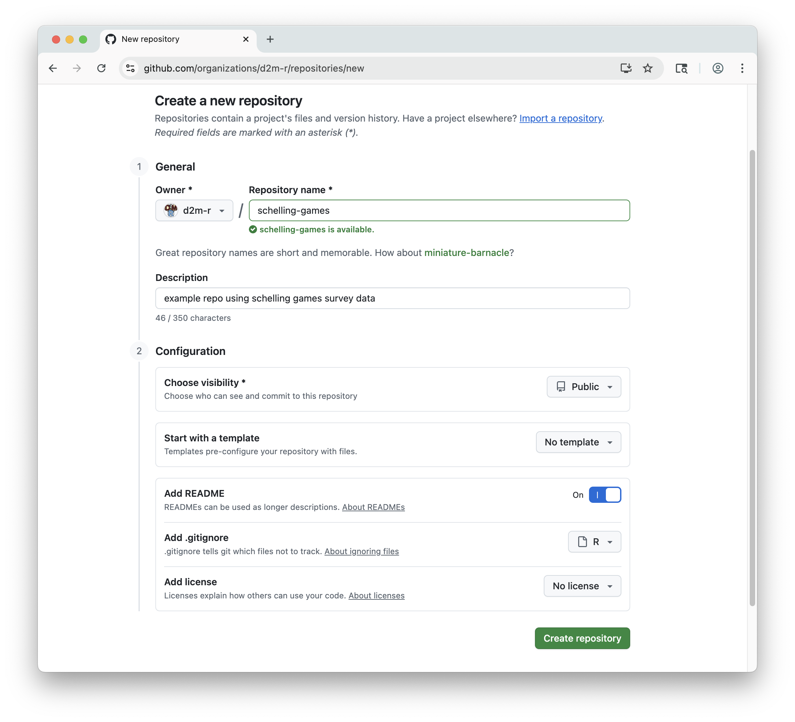
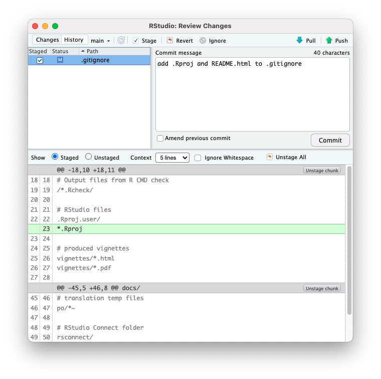
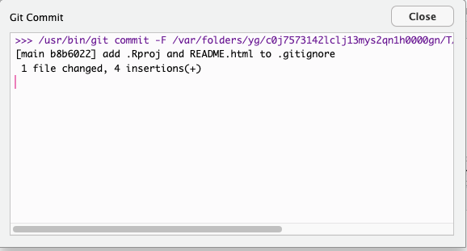
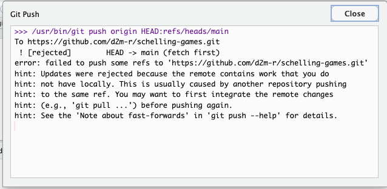
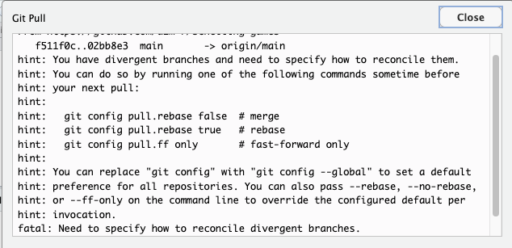
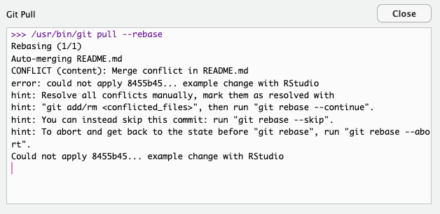

Guided Exercise: Create and Sync a GitHub Repo with RStudio
Overview
Pre-requisites
- A GitHub account.
- RStudio installed with git configured. Learn more:
Steps
- Create a repo on GitHub.
- Clone it in RStudio.
- Make a change in RStudio.
- Commit and push the change.
- Check the change on GitHub.
- Make a change on GitHub (and commit).
- Pull the change in RStudio.
- Create a conflict by making and committing a change in RStudio and a different (conflicting) change on GitHub.
- Resolve the conflict in RStudio.
Step 1: Create a GitHub Repo
Log in to your GitHub account and navigate to “My Repositories.” Create a new repository by clicking the “New” button.
On the “Create a new repository” page, choose a repository name, add a brief description, and choose whether to make it public or private.
Toggle on “Add README” to initialize the repository with a README file. Add a .gitignore file using the R template. Skip the “Add license” option.

Click “Create repository” to finalize the creation of your new GitHub repository. GitHub will take you to your repo’s main page, where you should see:
- The repo name and public/private tag
- A short “about” sidebar with your brief description
- A list of files currently in the repo:
.gitignoreandREADME.me - Above the list is your most recent (and at this point only) commit message: “Initial commit”, along with the user who made the commit (you), the time since the commit, and a unique commit hash.
- A rendered view of your
README.mdfile, including the title and description

Step 2: Clone the Repo in RStudio
In RStudio, go to File > New Project... > Version Control > Git.
Back on your repo’s main page on GitHub, click the green “Code” button and copy the URL under “HTTPS”.
In the RStudio project dialog, paste the URL into the “Repository URL” field. Add a name for your project in the “Project directory name” field. Typically the name is the same as the repo name (minus the .git). Choose a directory on your computer where you want to save the project. This should be a directory where you keep your R projects, or a subdirectory for a collection of repos (e.g., the repos for this class).
The directory you choose must be stored locally on your computer’s hard drive. Do not save your project to any cloud storage!
Click “Create Project” to clone the repo and open it in RStudio.

When you view your new project in RStudio, you’ll see it matches the contents of your GitHub repo. The Files pane should show the .gitignore and README.md files, as well as a new .Rproj file that RStudio created for you.
Open your README.md file in RStudio to see the markdown content. You can click “Preview” to render markdown to HTML, which is how it will appear on the repo’s GitHub page.

RStudio to GitHub
Edit your .gitignore file
Rendering to HTML will add the README.html file to your project directory. Open the Git pane in RStudio to see that this file is listed as an untracked file. Git has detected a difference between the contents of the last commit and the work you have done in your project directory, namely adding this new file.
This HTML file is generated automatically by GitHub when it renders your README.md file, so it doesn’t need to be synced with GitHub or tracked by Git.
Open the .gitignore file in RStudio. This file tells git which files and folders to ignore when detecting and committing changes.
If you initialized your repo using the R gitignore template, it should already include common files and folders to ignore for R projects, like:
# History files
.Rhistory
.Rapp.history
# Session Data files
.RData
.RDataTmp
# User-specific files
.RuserdataAdd the following lines to the .gitignore file to ignore the generated HTML file:
# Autogenerated files
README.htmlSave the .gitignore file. Take another look at your Git pane. The README.html file should no longer be listed as an untracked file, and you should see a new file appear in the list of detected differences: .gitignore.
You should also see the .Rproj file itself in the Git pane. This is a file that RStudio automatically creates for every project with settings specific to your RStudio environment. I prefer not to track or sync this file, since it can contain user-specific settings that may not be relevant to other users of the repo.
The R gitignore template does not include this file by default, but does already have a section for RStudio files. Add your .Rproj file to that section by adding *.Rproj to your .gitignore file:
# RStudio files
.Rproj.user/
*.RprojBy including the * wildcard character, Git will ignore all files with the .Rproj extension. This is more relevant for other file types, but is nice here as a favor to anyone cloning your project. They may give their R project a different name, which would change the .Rproj filename. Listing out the specific filename would not ignore their file, but using the wildcard will.
Save the .gitignore file again, and notice that the .Rproj file has disappeared from the Git pane.
Commit your changes and push to GitHub
In the Git pane, check the box next to .gitignore to stage the change. “Stage” means to prepare the change to be committed. Only staged files will be included in the next commit.
In this case, we have only made changes to one file, so we are staging that one file. If you have made changes to multiple files, you can choose to only stage some of them. This is useful if some of the changes you made are not ready to be committed, or if your changes are unrelated and you want to commit them separately with different explanations in the commit messages.
Click the “Commit” button to open the Review Changes dialog. Selecting the gitignore file allows you to see all the changes you made to it since the last commit.
Make sure that the box next to .gitignore is checked in the dialog, indicating that it is staged for commit. If you forget to stage/unstage files in the Git pane, you can still do so here.
Add a brief, informative commit message:
add .Rproj and README.html to .gitignore
Click the “Commit” button in the dialog to finalize the commit. You’ll see a new dialog summarizing what was included.

Click “Close” to return to the Review Changes dialog, which should no longer list any staged or unstaged changed files. Instead, you should see the message: “Your branch is ahead of ‘origin/main’ by 1 commit.” This means that you have made a commit in your local repo that has not yet been pushed to the remote repo on GitHub. You can confirm this by refreshing your repo’s GitHub page, which will be unchanged.
To actually sync your changes to GitHub, click the “Push” button in the Git pane. You’ll see another dialog confirming that the push was successful. This dialog will also show any warnings or errors if the push failed.
Back in the Review Changes window, the message about your branch being ahead of ‘origin/main’ should be gone, indicating that your local and remote repos are now in sync.
Confirm this by refreshing your repo’s GitHub page. You should see a few changes:
- The commit you just made is listed above the file list
- The commit message is also displayed next to the
.gitignorefile, but not the README file, since you did not make any changes to that file in RStudio.

GitHub to RStudio
You can do the same process in reverse, making changes on GitHub and pulling them into RStudio. In practice, there is rarely good reason to do this, but it’s a good way to get the hang of how pulling and pushing works.
Edit your README file on GitHub
On the repo’s page, click on the README.md file to view it. Click the pencil icon in the top right corner to directly edit the text file.
Make the following changes to the file directly in the browser editor:
- Change the level 1 heading (your repo’s name) to title case.
- Add a level 2 heading for “Overview”.
- Edit the brief description to be a complete sentence (or sentence) using sentence case.

Commit your changes and pull to RStudio
Click the green “Commit changes” button and add a commit message (e.g., Improve README formatting). Leave the extended description blank, and leave “commit directly to the main branch” selected. Click the “Commit changes” button to finalize the commit.
Back on the repo’s page, you should see your newest commit message replace the previous one and appear next to the README.md file. Your changes to the file should also be reflected in the rendered view below the file list.
Go back to RStudio and open the Git pane. You won’t see any changes to your files, and unlike when you went from RStudio to GitHub, you won’t see any indication that your local repo is now 1 commit behind the remote repo.
To sync your local repo with the remote repo, click the “Pull” button in the Git pane.
The Git Pull dialog will show you a summary of the pull, including the strategy it used to merge the changes (in this case, a “fast-forward” merge unless you’ve made other changes in RStudio).
You can now open the updated README.md file in the Files pane to see the changes you made on GitHub.
Review your commit history
In the Git pane, click the “History” button to view your commit history. This is actually the same “Review Changes” window from when you committed changes, just toggled to a different view (top left corner). You should see 3 commits in order of newest to oldest:
- The readme change you made on GitHub
- The .gitignore change you made in RStudio
- The initial commit made when you created the repo
Click any of these commits to see the changes that were included in that commit.
Create and Resolve a Conflict
To practice resolving merge conflicts, create a simple conflict by making and committing a change in RStudio and a different (conflicting) change on GitHub.
To make this as simple and clear as possible, you’ll make example, unrealistic changes to the README.md file in both places.
Make and commit a change in RStudio
In RStudio, open the README.md file and add a new section with a level 2 heading for “Conflicting Changes”. Add a sentence under this heading indicating that you made this change in RStudio:
## Conflicting Changes
This change was made in RStudio.Save, stage, and commit this change with the message example change with RStudio, but do not push yet.
Make and commit a conflicting change on GitHub
On GitHub, open README.md in the browser, and under the same heading, add instead:
## Conflicting Changes
This change was made on GitHub.Commit directly to the main branch with the message example change on GitHub.
Try to Push & Pull from RStudio
Back in RStudio, click Push in the Git pane. Instead of a summary of the push, you’ll see an error message that the push was rejected.

The dialog suggests that your changes can’t be pushed because the remote repository has conflicting changes that must be pulled first.
Per this suggestion, click the “Pull” icon in the Git pane or Review Changes window to pull the changes from GitHub. Git will attempt to merge, but will report a merge conflict due to “divergent branches” that must be reconciled.
 In the Git pane (not the Review Changes window), notice that there is a dropdown arrow next to the Pull icon. Click this arrow and “Pull with Rebase.”
This will attempt to reapply your local commit on top of the pulled commit from GitHub. Sometimes this will be enough to resolve the conflict automatically, but in this case, it will still report a merge conflict that you need to resolve manually. The dialog gives you some hints on how to resolve the conflict, but they may not make a lot of sense to you right now.

Close the dialog and return to the Git pane. You’ll see that:
- You’re not in the “main” branch anymore, but in a special “rebasing main” state.
- The push and pull buttons are disabled.
- The README.md file is listed as having a conflict that needs to be resolved. The orange “U” indicates that the file is “unmerged.”
Identify the Conflict
If you already have the README file open, you’ll see text from both versions of the file, along with special marker lines indicating the conflict.
Open RStudio’s Terminal pane (not the console!) and type:
git statusThis will:
- Show you the ongoing status of your repo:
interactive rebase in progress; onto 02bb8e3 - Give you some hints on how to complete or abandon the rebase (using terminal commands)
- Indicate which files are unmerged and need to be resolved:
both modified: README.md
Open README.md in RStudio if it isn’t open already. You’ll see the conflict marked with lines like:
<<<<<<< HEAD
This change was made in RStudio.
=======
This change was made on GitHub.
>>>>>>> [commit-hash]These markers show both versions of the change and indicate a conflict to be resolved manually.
Thanks to the clear example changes, it’s easy to see that the text above the === line is the local commit made in RStudio, and the text below it is the remote commit made on GitHub. This is always the case: local changes are above the === line, and remote changes are below it.
Resolve the Conflict in RStudio
Edit the file to remove the marker lines (<<<<<<<, =======, >>>>>>>) and decide which content to keep, or combine both as appropriate. In this case, you can combine both changes:
## Conflicting Changes
These changes were made in RStudio and on GitHub.Save the file, go to the Git pane, stage the file, then commit. This is the same process as before, but notice the “no branch, rebasing main” message at the top of the pane. That tells you that even though you’re following the same general steps, Git is in a special state of merging files and handling things a bit differently.
Use a commit message that indicates that you are resolving a merge conflict, e.g., resolve merge conflict in README.md. (We’ll come back to what the best commit message here would be in the last step!)
Complete the Rebase
Everything should now look normal again in the Git pane, except that you’re still in the “rebasing main” state. To complete the rebase and return to the main branch, go back to the Terminal pane and type:
git rebase --continueSince we’ve already staged and committed the resolved file, this command will complete the rebase and return you to the main branch. If there were any other conflicts, it would prompt you to resolve them before continuing.
Back in the Git pane, you should now see that you’re back on the main branch, and the push and pull buttons are enabled again. You’ll see the message that your branch is ahead of ‘origin/main’ by 1 commit, indicating that you have local changes that need to be pushed to GitHub. Complete the merge by clicking the Push button to sync your resolved changes to GitHub.
Take another look the the GitHub page for your repo. If all has gone well, you should see your latest commit message indicating that you resolved the merge conflict, and the README.md file should show the combined changes.
Review your commit history
Everything is good to go, but take a look through your commit history one last time.
On GitHub, click the “X commits” link above the file list to view the commit history. In RStudio, click the “History” button in the Git pane.
In both places, you should see 5 commits in order of newest to oldest:
- The merge conflict resolution commit
- The readme change (with conflict) you made on GitHub
- The formatting change (no conflict) you made on GitHub
- The gitignore additions (no conflict) you made in RStudio
- The initial commit made when you created the repo
Notice what is missing: the commit you made in RStudio that caused the conflict.
This commit is not in the history because it was effectively rewritten during the rebase process. Your commit message “example change with RStudio” is gone, and replaced by “resolve merge conflict in README.md”.
This may or may not be what you want in practice, so be thoughtful about the commit you use to resolve the conflict. Imagine a scenario where the GitHub change was a minor typo fix, but your RStudio change was a substantial addition to your data analysis scripts. In that case, a message about merge conflict would not be a good representation of the important work you did in RStudio. It would be more informative to use a commit message that reflects the substantive change you made, and just note in the extended description that you resolved a merge conflict.
Wrap-up
You’ve successfully created a GitHub repository, cloned it in RStudio, made changes in both environments, and resolved a merge conflict.
These are the core skills you’ll need to effectively use Git and GitHub in your data science projects. Of course, things are never so simple in real project. Merge conflicts are famously infuriating and baffling, especially if you’re using Git in relatively limited contexts (like we do in this class). The more you do it, the more problems you’ll encounter, and the better you’ll get at both understanding what Git is trying (though perhaps failing) to do for you and how to fix it when things go terribly wrong.
Major Takeaways
- Be diligent about keeping your local and remote repos in sync by regularly pulling and pushing changes.
- Follow the Git workflow: Pull changes when you sit down, commit frequently as you work, and push changes when you step away.
- Use clear, informative commit messages to document your changes and the context around them.
- Don’t freak out when you encounter merge conflicts. Try not to think of them as something going wrong, but something actually going very right! Git is doing its job by protecting you from accidentally overwriting changes.